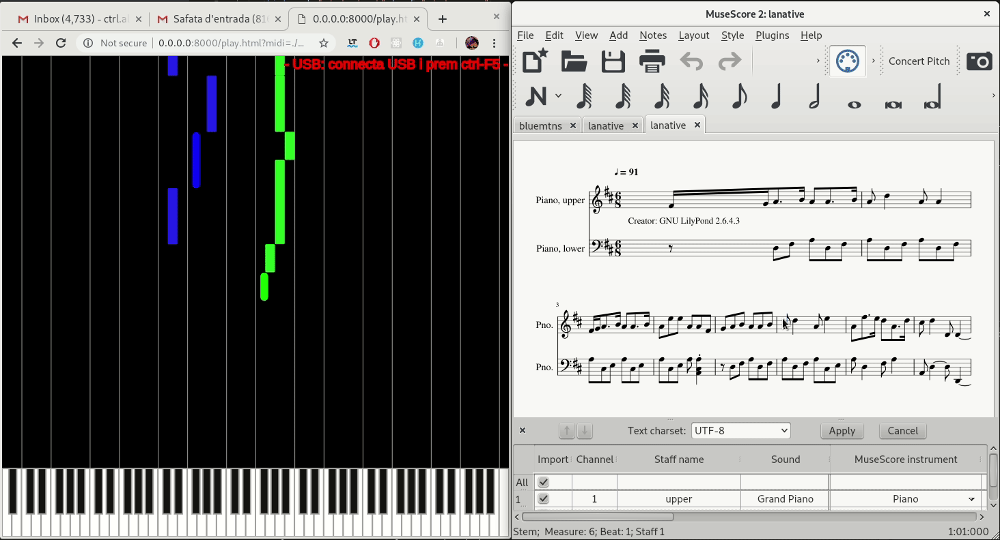
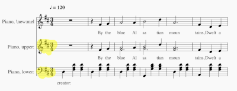

Títols (fes
PR
per a més títols)
La Native
(http://www.mutopiaproject.org)
Erlkönig (alternative typesetting) by F. Schubert (1797–1828)
(http://www.mutopiaproject.org)
The Blue Alsatian Mountains by S. Adams (1844–1913)
(http://www.mutopiaproject.org)

Sistemes suportats:
Tres barres on el piano ocupa la segona i tercera:

Dues barres de piano:
by @ctrl_alt_d